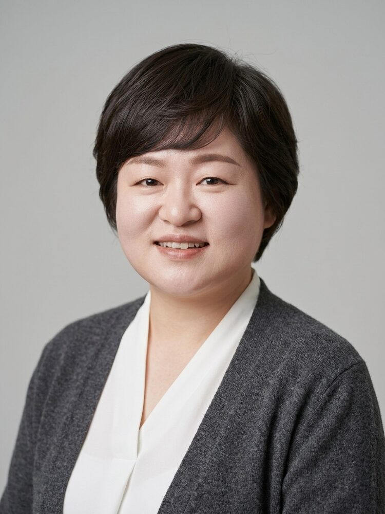
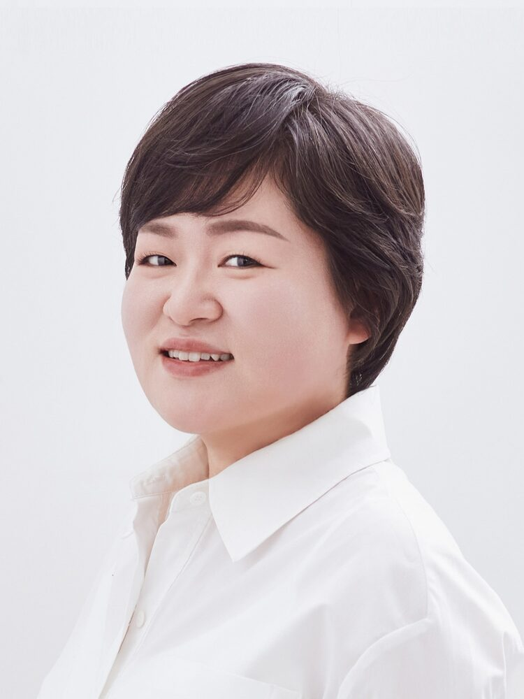

사람의 가능성을 키우는
아로마·웰니스 교육 리더
배움을 전문성으로, 전문성을 새로운 기회로. 성향미는 아로마융합케어 평생교육, 전문강사 양성, 저술, 기관 대상 웰니스 교육을 이어가며 REAL 팀을 이끌고 있습니다.

검증 가능한 활동 이력
교육·학술 활동
경남대학교 사회복지학(응용사회학) 학사, 인제대학교 사회복지학 석사를 마쳤고, 동아대학교 국제전문대학원 글로벌다문화 전공 박사과정에 재학 중입니다. 한국승강기대학교 선샤인융합학부 입시담당교수로서 2년제 아로마융합케어 평생교육전공(전문학사 학위·평생교육사 2급 과정)의 신입생을 모집하고 있으며, 교육과정과 교재를 준비해 2027년부터 관련 교수 활동을 이어갈 예정입니다.
강사·협회 활동
국제웰니스교육협회 대표강사(2017~), 국제아로마임상협회 대표강사(2019~), 한국항노화협회 이사(2019~)로 활동하며, 학교·기업·공공기관·복지시설 등 다양한 기관에서 아로마테라피·웰니스·감정케어 교육을 진행해 왔습니다.

사회복지사에서 REAL 팀 리더까지
성향미는 사회복지 현장에서 사람을 만나는 일로 커리어를 시작해, 웰니스 분야 창업과 아로마 전문 강사 활동을 거쳐 현재 REAL 팀을 이끌고 있습니다. 사실에 기반한 자세한 이력과 교육 철학은 ABOUT 페이지에서 소개합니다.
ABOUT 자세히 보기기관과 함께 만드는 교육
학교, 복지기관, 기업, 공공기관, 평생교육원 등 다양한 기관에서 실제로 진행해온 교육을 바탕으로, 기관의 특성에 맞춰 프로그램을 함께 설계합니다.